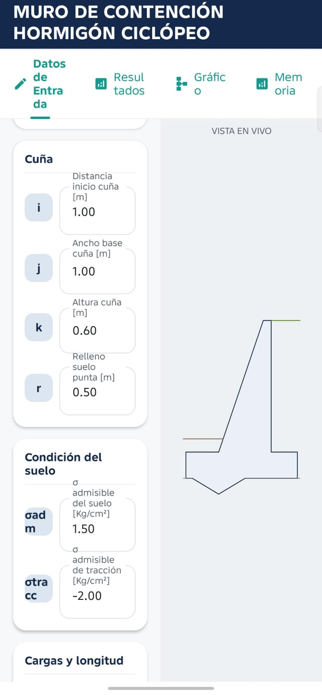
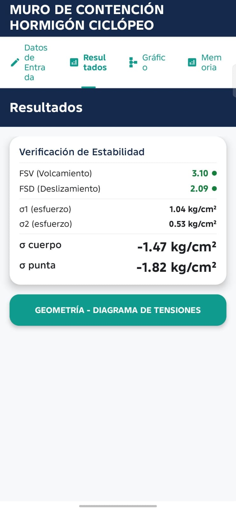
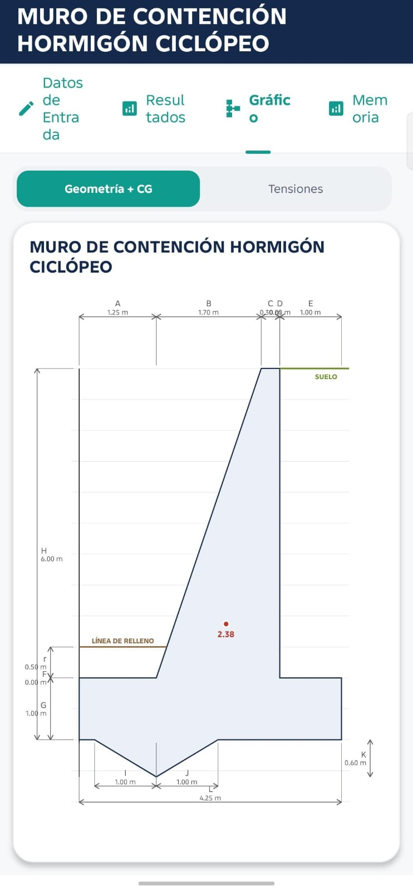
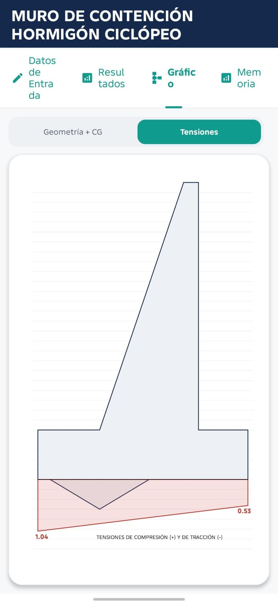
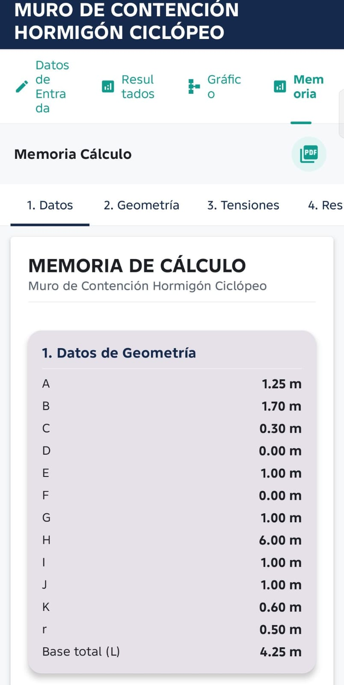

Estabilidad completa
Revisa volteo, deslizamiento y tensiones sobre el terreno.
Calcula empuje de tierra, peso propio, volteo, deslizamiento, tensiones y costos con un diagrama basado en tu propia geometría.
Resultados ordenados y una memoria profesional lista para compartir.
Revisa volteo, deslizamiento y tensiones sobre el terreno.
Considera la presencia de agua cuando corresponde al proyecto.
Genera un reporte organizado de nueve secciones en tamaño carta.
Desliza para ver el proceso.





Escríbenos y te explicamos los precios, la compatibilidad y la activación.